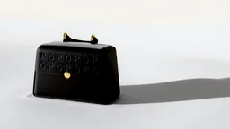
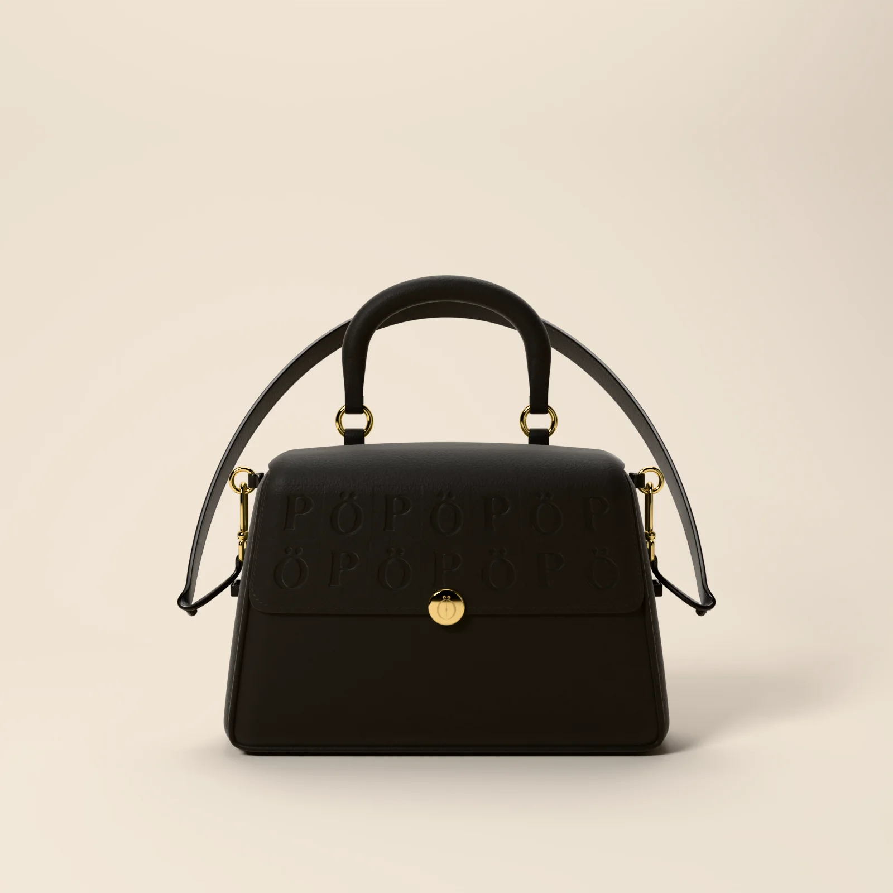
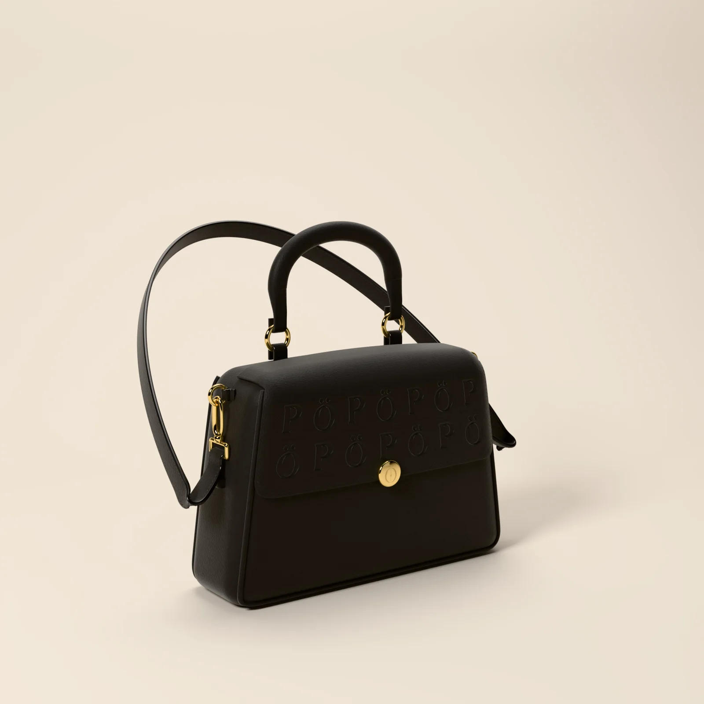
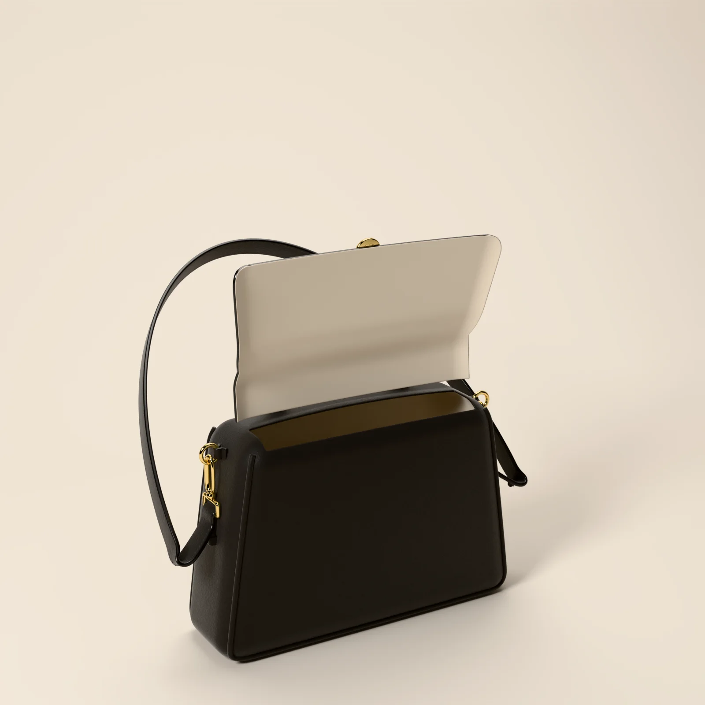
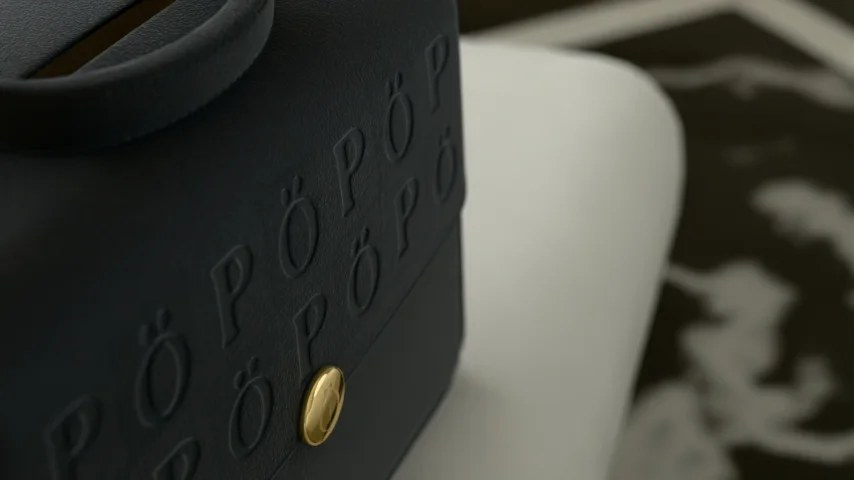
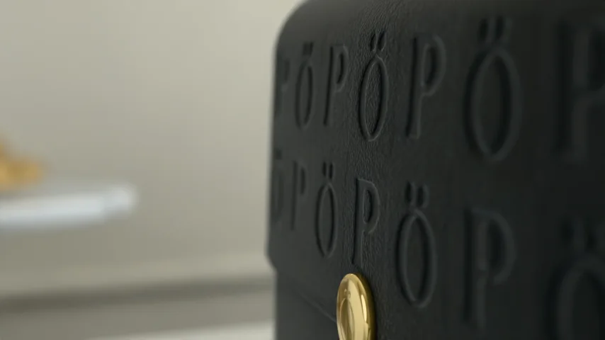
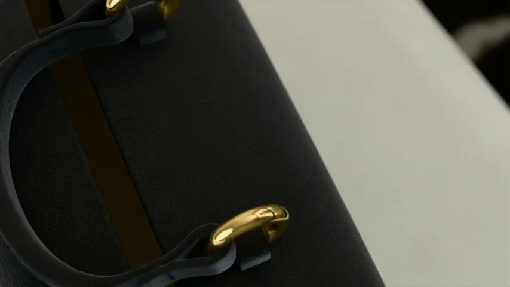
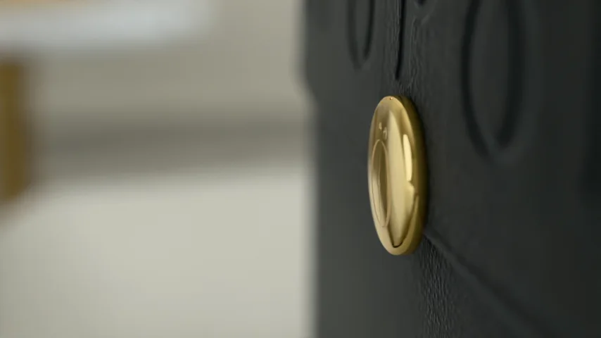
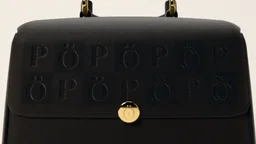

STAND-IN · img/itaoca/hero/master.* (the director’s signature shot: House of stone: alone on fresh snow, one long shadow (story/product-stills/DIRECTOR-SHOTS.md; its 144p preview stands in); 8K, 7680 × 4320)Chapter I · Bags
Itaoca
Top-handle bag

STAND-IN · img/itaoca/front/master.* (departments/apparel/new-pieces-2026-11/build/po-tophandle/site/po_tophandle_front_16k.png; 16K, 15360 × 8640)front

STAND-IN · img/itaoca/three-quarter/master.* (three-quarter view, 8K; 8K, 7680 × 4320)three quarter

STAND-IN · img/itaoca/open/master.* (open view, 8K; 8K, 7680 × 4320)open
Chapter I
Itaoca
Top-handle bag
The bag carried from the car to the door. Structured black calfskin, a rolled handle, the house brass clasp, and cream suede waiting inside.
- LEATHER
- BLACK CALFSKIN
- DIMENSIONS
- 30.6 × 19.8 × 10 CM
- LINING
- CREAM SUEDE
- CLASP
- BRASS, THE Ö ENGRAVED
USD 2,900 pre-sale USD 2,450
Made to order.
Keep a seatThe register sees the pre-sale first.
Details
- Pre-sale
- Made to order. We email your delivery date once production is confirmed. Cancel for a full refund any time before production starts.
- Returns
- Exchanges within 14 days of delivery, unused and with tags.
- Care
- Wipe with a soft dry cloth. Keep from rain and heat; if it gets wet, let it dry slowly away from a radiator. Store in its dust bag, stuffed with tissue, out of the light. Leather cleaning by a specialist only. Care
- Size
- The measurements
In its world
Itaoca
LEATHERBLACK CALFSKINDIMENSIONS30.6 × 19.8 × 10 CMLININGCREAM SUEDECLASPBRASS, THE Ö ENGRAVED
STAND-IN · img/itaoca/walk-1/master.* (walk stop 1: the flap, the full-size render; 8K, 7680 × 4320)
STAND-IN · img/itaoca/walk-2/master.* (walk stop 2: clasp, the full-size render; 8K, 7680 × 4320)
STAND-IN · img/itaoca/walk-3/master.* (walk stop 3: handle, the full-size render; 8K, 7680 × 4320)
STAND-IN · img/itaoca/walk-4/master.* (walk stop 4: the disc, the full-size render; 8K, 7680 × 4320)THE FLAP7 × 2 SQUARESPressed 0.55 mm deep, with 8 mm of plain leather round it. The flap alone carries the monogram.
CLASPBRASS, THE Ö ENGRAVEDThe house disc, 24 mm, the mark engraved 16 mm tall.
HANDLEROLLED, 18 × 16 MMIt rises 11 cm above the top on two 22 mm brass rings.
THE DISC24 MMThe mark engraved 16 mm tall.
In the world
Itaoca
Top-handle bag
Scroll to walk around it
Close, at 100%
The PÖ on the flap
The clasp
The rolled handle

STAND-IN · img/itaoca/detail-site/master.* (the flap and the disc, close, 8K close-up; 8K, 7680 × 4320)The flap and the disc, close
In the same scene